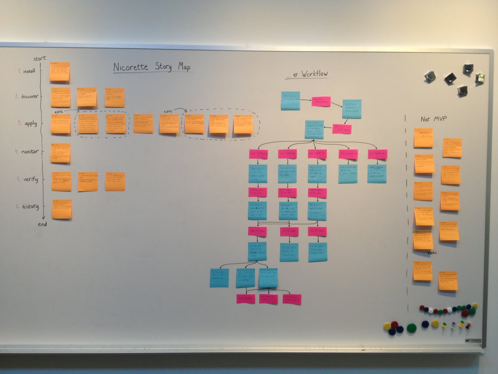
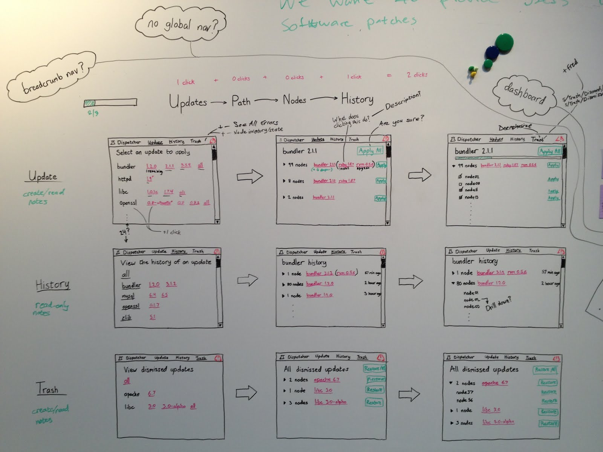
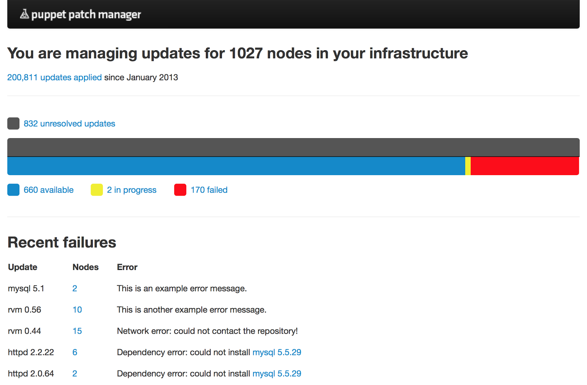
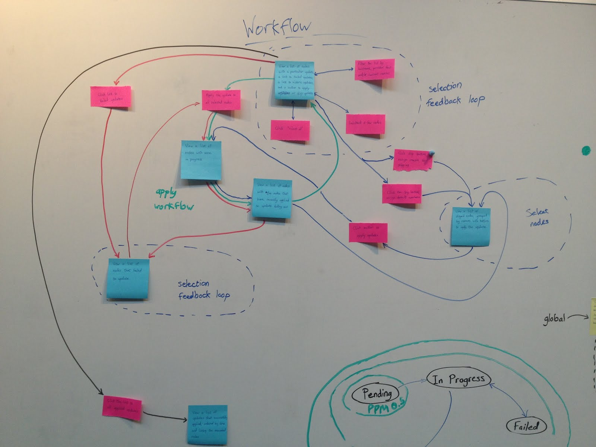
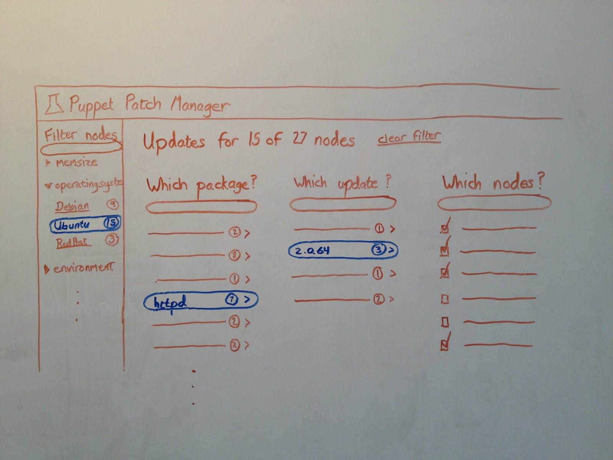

Patch Manager
Back to home pageImagine you’re a sysadmin. Your daily responsibilities revolve around the care and feeding of hundreds (or thousands) of servers. It’s a lot like herding cats. Your servers have the tendency to diverge over time, resulting in suble differences in behavior and overall quirkiness.
With Puppet (or another configuration management solution), you solve your configuration problems once, in code. Puppet does the tedious work of keeping your servers in line.
This solves the general case very well. But Puppet has a very steep learning curve, and there are common tasks which only require a small subset of the functionality Puppet provides.
One of these tasks is patch management . Patches–or software updates–are important to sysadmins. The wrong software version can leave you open to security vulnerabilities. You want to know the version of software across your infrastructure, and have the ability to update it if necessary.
The problem is, every operating system manages software updates differently. If you manage a dozen operating systems, this is a difficult problem indeed. By using Puppet as the cross-platform base to solve this problem, we started to envision how a patch management solution would work.
To start, I worked with my product owner to define stories and organize them in terms of the mental modal we were aiming for.
With the high-level workflow in place (install, discover, apply, monitor, verify, history), we were able to break the stories into a workflow. We set aside any obviously out-of-scope stories for consideration in future releases.
The next step in the process was to develop rough wireframes for the various screens in the workflow (blue stickies in the image above).
At this point, we had a relatively good grasp of the UI we thought we needed to build. Next, we converted these rough sketches to a Balsamiq prototype and performed several rounds of user testing.
Until this point, the design was based on our theoretical view of the world. Testing with users helped make the design more concrete and allowed us to cull parts of the workflow that were really not needed in an MVP. The (much simplified) workflow became as follows:
Instead of multiple pages, we were able to keep the entire workflow to a single page. This made it much easier to build, and easier to reason about from a design standpoint.
I collaborated heavily with our visual designer and front-end engineer to create the final prototype. We ended up not shipping Patch Manager, due to a lack of paying customers, but the process of designing and shipping a prototype was a key part of coming to that conclusion.
 Back to home page
Back to home page